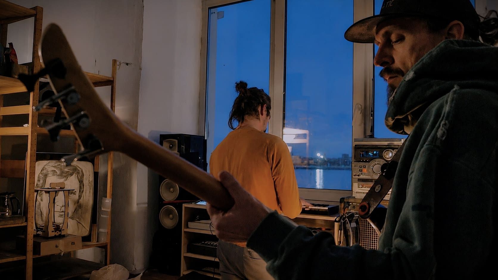
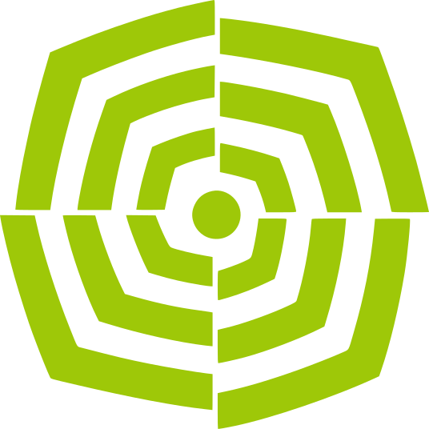
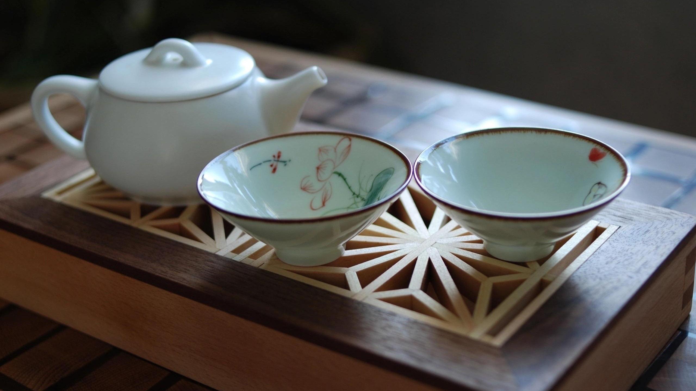
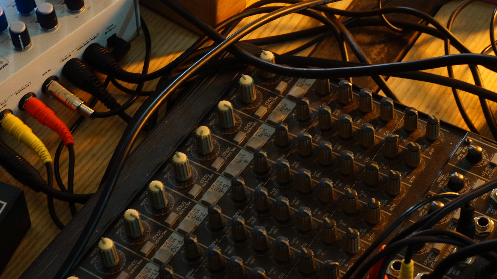
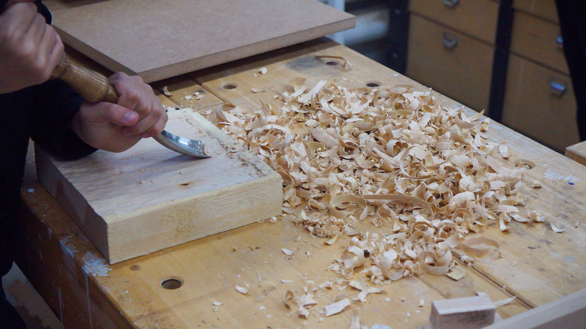
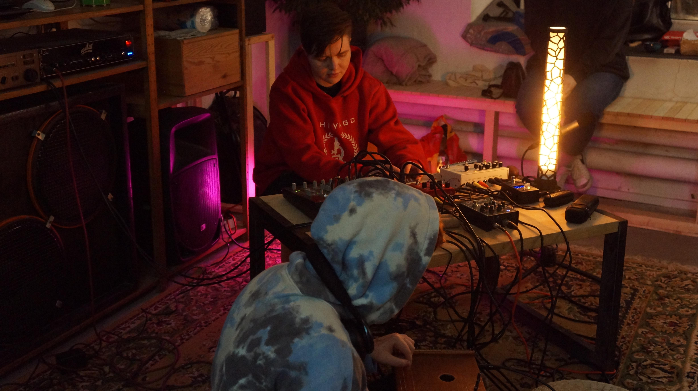
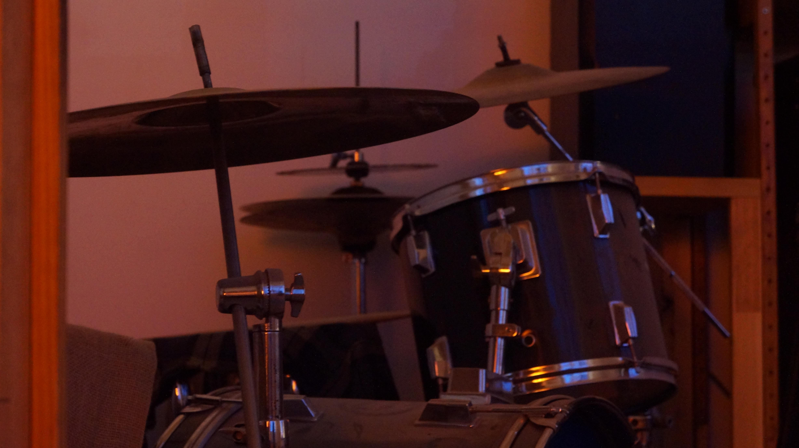

ПИЛИМ
Мастерская звука и дерева в Севкабель-Порту
«Пилим и Пилим» — независимая мастерская, объединяющая ремесло, музыку и культуру совместного творчества. Мы пьем чай, создаём предметы из дерева, строим музыкальные инструменты, играем музыку и тем самым исследуем то, как материалы, звук и люди могут вдохновлять друг друга.

Пьем чай
Пауза — настройка слуха. Завариваем, разливаем, молчим.
Слушаем воду,
стук пиал, дыхание залива.
Чаем занимается Хранитель пауз.
Посуда — ручная работа, можно заполучить.
Делаем классные деревяшки
Чайные принадлежности и другая красота из дерева разных пород. Масло вместо лака. Слышишь? — это дерево дышит. Каждая поверхность хранит след инструмента и времени.


Строим музыкальные инструменты
Гравитон — гравитационный аккорд.
Гул планетарного масштаба.
Кахон Фибоначчи — перкуссионный ящик в золотой пропорции.
Сухой глубокий бас.
Монохорд — одна струна, сто смыслов.
Медитация в дереве и звуке.
Играем музыку
Каждая встреча заканчивается общей игрой.
Без нот, без правил.
Кто-то задаёт ритм на кахоне,
кто-то ласкает монохорд,
кто-то просто сидит.
Записываем фрагмент —
он уходит в наш закрытый канал в
Telegram


Мастер-классы
Созданы для тех, кому интересно узнать, как устроена работа с деревом.
В мастерской есть всё необходимое: профессианольное оборудование и пространство, где можно спокойно погрузиться в процесс.
Занятие ведет мастер с многолетним опытом, который знает особенности разных пород древесины, изучает техники обработки и делится своим подходом. Мы будем проходить основные этапы создания деревянных изделий, пробовать разные техники обработки,
наблюдать за характером дерева и постепенно находить свой собственный способ взаимодействия с материалом.
Без лишней спешки и стремления сделать «идеально», шаг за шагом, мы будем наблюдать, как из бездушной заготовки рождается новое изделие.

Джемы
Это совместное музыкальное исследование, пространство, где музыка рождается прямо здесь и сейчас.
Без заранее продуманного плана и ожидания идеального результата — только живое взаимодействие и импровизация.
В мастерской есть всё необходимое — гитара, бас, ударные и куча других возможностей извлекать звуки.
Мы собираемся вместе, настраиваемся на общую волну, берём инструменты и смотрим, куда нас это приведёт.
Не нужно быть музыкантом — достаточно любопытства и желания попробовать.
Здесь не важен уровень подготовки.
Кто-то приходит с опытом, кто-то впервые берёт в руки инструмент.
Главное — быть открытым, прислушиваться к другим и вместе позволять музыке случаться.

Осторожно!
За нашим окном — залив, корабли и небо,
которое каждый день рисует новый фон.
Очень легко зависнуть
и забыть, зачем пришёл.
Расписание мероприятий пока формируется. Но вы уже можете присоединиться — оставьте свою почту, и мы напишем вам первыми, когда объявим даты новых мастер-классов, джемов и других событий. А пока можно заглянуть на наши страницы в соц. сетях. Там мы делимся новостями мастерской, рассказываем о будущих встречах и показываем, чем живёт «Пилим и Пилим».
